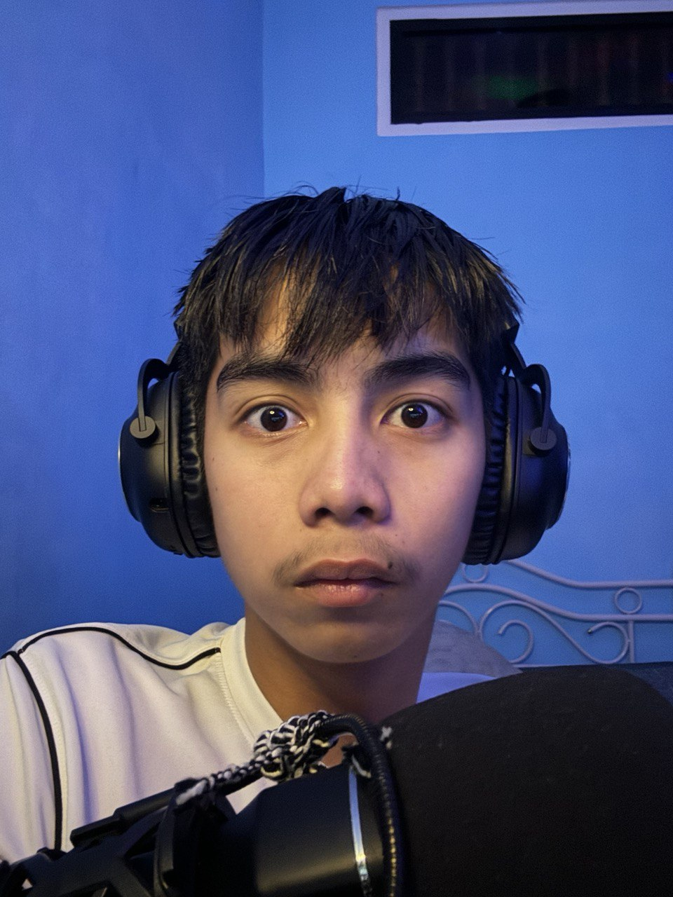
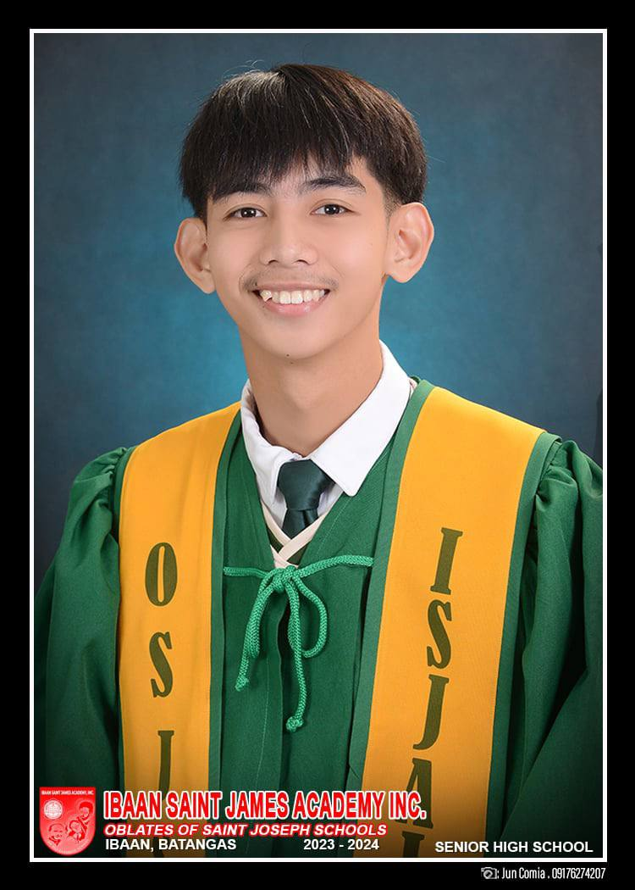
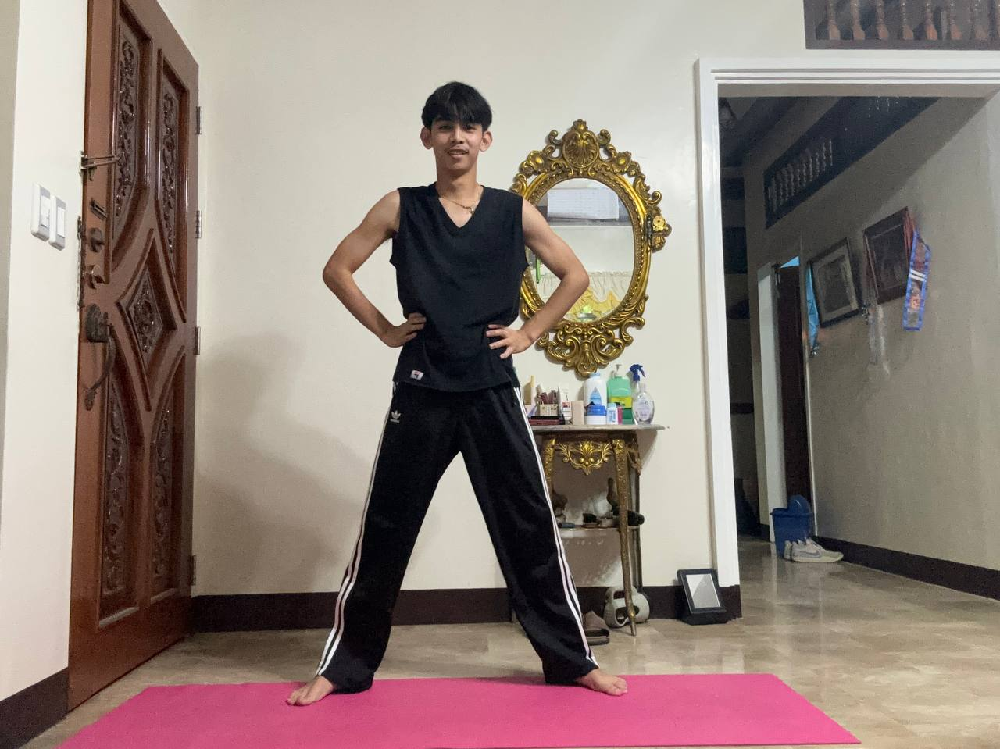

Introduction
Hello, my name is Alwyn Kent M. Macatangay, and I am the owner of this website. Currently, I am a first-year college student pursuing a Bachelor of Science in Computer Science at Batangas State University: Alangilan Campus. While I am still learning, I gather information from various resources and am gradually building my understanding of web development.
Who Am I?
I was born on August 11, and at 19 years old, I have always enjoyed hands-on work. This is why I find myself gravitating toward fields that involve practical application. Although web development doesn't fully align with my interests, I am still exploring and learning about it. My real passion lies in Robotics, and I plan to join the SCRIPT organization in the future. As a member of the Junior Philippine Computer Society, I continue to grow and explore different facets of college life.
What is My Goal?
My primary goal is to successfully complete my COLLEGE DEGREE and work towards realizing my DREAMS. While I face several challenges, I am committed to overcoming them step by step. I believe in setting goals that lead to long-term happiness and satisfaction, and I am always willing to assist others whenever possible.
